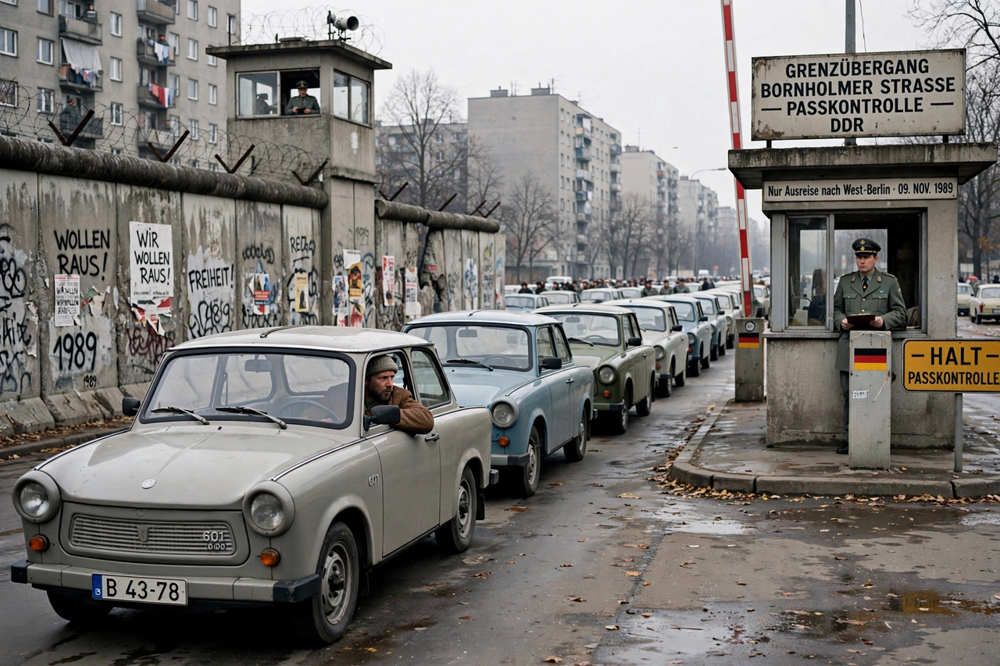

Eastern Bloc
From Wikipedia, the free encyclopedia

The Eastern Bloc, also known as the Communist Bloc, was the group of socialist states of Central and Eastern Europe, East Asia and Southeast Asia under the influence of the Soviet Union during the Cold War (1947–1991). In Europe it comprised the Warsaw Pact members — the USSR, Poland, East Germany, Czechoslovakia, Hungary, Romania, Bulgaria and (until 1968) Albania — whose communist governments were installed or sustained by Soviet power.
Formation
As the Red Army advanced in 1944–45, coalition governments gave way to communist regimes across Eastern Europe; the 1948 Czechoslovak coup and the Berlin Blockade completed the division symbolised by Churchill's 'Iron Curtain' speech. Economic integration followed through Comecon (1949) and military alliance through the Warsaw Pact (1955). Yugoslavia under Tito broke with Stalin in 1948 and pursued non-alignment.
Crises and control
Soviet dominance was enforced violently: the Hungarian Revolution of 1956 was crushed by Soviet tanks, as was the Prague Spring in 1968 under the Brezhnev Doctrine; East German workers' rising in 1953 and Poland's Solidarity movement (1980–81, suppressed by martial law) exposed the regimes' unpopularity. Living standards lagged the West, and citizens' movements were monitored by secret police such as the Stasi.
Collapse
Mikhail Gorbachev's reforms and his refusal to intervene (the 'Sinatra Doctrine') allowed the bloc to dissolve in the Revolutions of 1989: Poland's semi-free elections, Hungary's opening border, the fall of the Berlin Wall on 9 November 1989, and finally the Dissolution of the Soviet Union in December 1991 ended the bloc entirely.